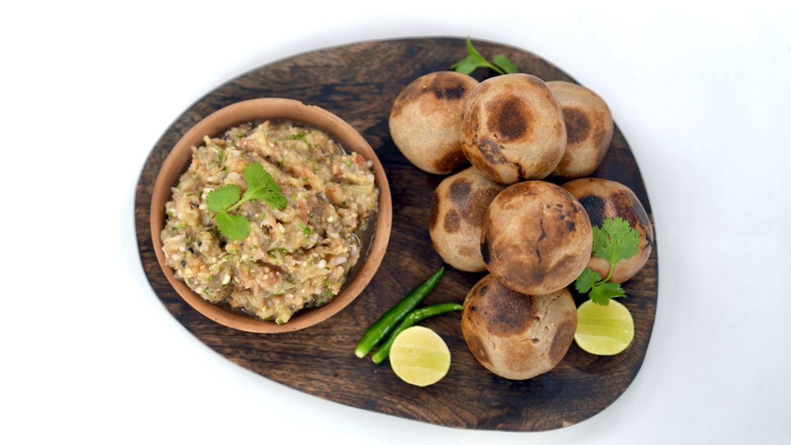

Litti choka

Litti choka is a flavorful Indian dish hailing from Bihar and Jharkhand. It's a delightful combination of crispy, oven-baked wheat balls called litti, stuffed with a savory and spicy mixture of roasted chickpea flour (sattu). This earthy filling is balanced by a contrasting chokha, a mashed vegetable relish typically made with brinjal, potato, and tomato.
The contrasting textures and vibrant flavors make litti choka a hearty and satisfying meal, best enjoyed hot with dollops of chutney or yogurt.
Ingredients
- 2 cups whole wheat flour
- 1/4 tsp salt
- 1 tbsp ghee or oil
- Water (as required)
- Ghee (for dunking)
- 1 large eggplant (brinjal)
- 3-4 medium tomatoes
- 1 medium potato (boiled and peeled)
- 1/4 cup onion, chopped
- 2 tsp green chilies, chopped
- 2 tsp ginger, chopped
- Handful of coriander leaves, chopped
- 1/2 tsp black salt
- Salt to taste
- 5 tbsp lemon juice
Steps
For the litti dough:
- In a mixing bowl, combine flour, salt, and ghee.
- Gradually add water and knead into a soft and smooth dough. Cover and rest for 30 minutes
For the chokha:
- Roast the eggplant and tomatoes over an open flame or grill until charred.
- Once cool, peel the skin and mash the vegetables.
- Heat mustard oil in a pan. Add onions, green chilies, and ginger. Saute until fragrant.
- Add mashed vegetables, potato, and spices. Cook for a few minutes.
- Stir in lemon juice and coriander leaves. Set aside.
Assembling the litti:
- Divide the dough into equal balls.
- Flatten each ball
- Shape the stuffed dough into round balls.
- Prick the balls with a fork and cook them in a preheated oven at 180°C (350°F) for 20-25 minutes, or until golden brown.
- Brush the hot litti with ghee before serving.
Serve litti hot with chokha and enjoy!